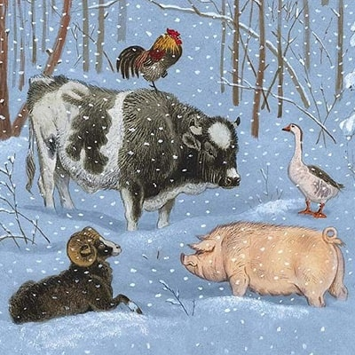

Жили-были старик со старухой, а с ними петух, гусь, свинья, баран и старый бык. Времена были голодные и решили старики зажарить своего петуха.
Услышал их планы петух и недолго думая сбежал в лес.
Утром вышел старик из дома, искал петуха по всему двору, да так и не нашел. Что тут поделаешь?!
Решили тогда старик со старухой зажарить свинью. Услышала свинья про такие планы, дождалась ночи и сбежала прямиком в лес.
Утром вышел старик из дома, искал свинью по всему двору, да так и не нашел. Что тут поделаешь?!
Решили тогда старик со старухой зажарить барана. Услышал их планы баран и говорит гусю:
— Друг мой гусь, побежали ночью в лес, вместе веселее, будем выживать!
Гусь конечно согласился, и они вместе с бараном сбежали ночью в лес.
Утром вышел старик из дома, искал барана по всему двору, да так и не нашел. Мало того и гусь пропал! Что тут поделаешь?!
Пришел старик к старухе и говорит:
— Чудеса у нас во дворе, остался один старый бык. Делать нечего, придется нам его жарить.
Услышал такой план бык и тоже ночью в лес сбежал.
Всё лето петух, свинья, гусь, баран и старый бык прожили в лесу, да старались никому на глаза не попадаться. Но вот лето закончилось, холодать стало.
Пришел бык к барану и говорит:
— Зима идёт, совсем близко, надо нам вместе избушку строить, от холода прятаться.
А баран ему отвечает:
— Мне избушка ни к чему, у меня шуба тёплая, мне никакие морозы не страшны.
Пошёл тогда бык к свинье и говорит:
— Зима идёт, совсем близко, надо нам вместе избушку строить, от холода прятаться.
А свинья ему отвечает:
— Мне избушка ни к чему, я в землю зароюсь, мне никакие морозы не страшны.
Пошёл тогда бык к гусю и говорит:
— Зима идёт, совсем близко, надо нам вместе избушку строить, от холода прятаться.
А гусь ему в ответ:
— Мне избушка ни к чему, я крыльями своими мягкими и тёплыми укроюсь, мне никакие морозы не страшны.
Пошёл бык к петуху и тот ему отказал. Плохо дело. Пришлось быку одному строить избушку, долго строил, много сил истратил.
В конце концов выстроил избушку, а в ней печь. Затопил печь, улегся рядом, отдыхает, греется.
А тут и зима пришла, морозная, лютая.
Первым к избушке быка прибежал баран:
— Бее-бее, пусти меня в избушку погреться, лютый мороз за бока щиплет, холодные ветра обдувают, совсем я замерзаю.
— Нет, баран, — отвечает ему бык, — я приходил к тебе за помощью избушку строить, ты сказал, что шуба у тебя тёплая, ты и так прозимуешь. Вот и ступай теперь дальше.
— Ах так, — разозлился баран, — я тогда разбегусь, разгонюсь и разрушу избушку твою!
Грустно и обидно стало быку, думал он думал, и пустил барана, самому-то ведь тоже погибать от холода не хочется.
Совсем немного времени прошло, а тут и свинья уже на пороге стоит, дрожит вся и просится в избушку.
— Нет, свинья, — отвечает ей бык, — я приходил к тебе за помощью избушку строить, ты сказала, что в землю зароешься, так и прозимуешь. Вот и ступай теперь дальше.
— Хрю, хрю, — разозлилась свинья, — а если не пустишь меня, так я тебе все углы разрою и разрушу избушку твою!
Бык впустил свинью, не оставаться же самому в такой мороз на улице да без теплой избушки.
Только свинья зашла и улеглась прямо перед печкой, как уже гусь на пороге.
— Га, га, га! Пустите меня друзья погреться!
— Нет, гусь, какие же мы друзья? — отвечает ему бык, — я приходил к тебе за помощью избушку строить, ты сказал, что крыльями укроешься. Вот и ступай теперь дальше.
— А не пустишь, я мох со стен весь выщипаю, и вы все замёрзнете!
Бык пустил и гуся.
А тут и петух уже в дверь стучит. Бык молча впустил и его.
Живут они впятером в одной избушке, вместе, печка теплая, а не весело им.
Про такую историю узнали волк и медведь. Зимой в лесу холодно, голодно, захотелось им поживиться.
Пришли волк и медведь к избушке. Волк говорит медведю:
— Иди ты первым, ты вон какой большой, всех испугаешь.
— Нет, ты иди, ты шустрый и получше управишься.
Зашел волк в избушку, а бык его раз и своими рогами прямо к стене прижал. Баран в бока толкает, свинья хрюкает, гусь клювом щипает, а петух кукарекает на всю избушку.
Испугался такого шума и гама волк и бросился наутёк. И медведь за ним. В самую глухую чащу добежали, присели отдышаться, волк медведю давай рассказывать чудеса, как его пятеро чуть по частям не разобрали.
С тех пор ни волк, ни медведь и шагу к избушке не ступали.
А бык, баран, свинья, гусь и петух так и живут до сих пор в избушке, друзьями стали и горя не знают.